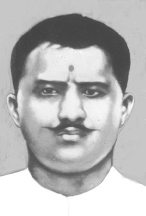
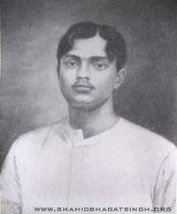
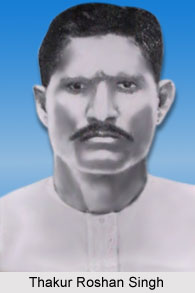
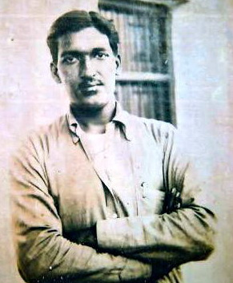
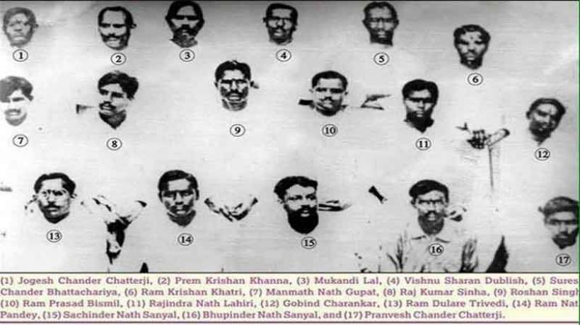

राम प्रसाद 'बिस्मिल'
जीवन परिचय
राम प्रसाद 'बिस्मिल' (११ जून १८९७-१९ दिसम्बर १९२७) भारतीय स्वतंत्रता आंदोलन की क्रान्तिकारी धारा के एक प्रमुख सेनानी थे, जिन्हें ३० वर्ष की आयु में ब्रिटिश सरकार ने फाँसी दे दी। वे मैनपुरी षड्यन्त्र व काकोरी-काण्ड जैसी कई घटनाओं में शामिल थे तथा हिन्दुस्तान रिपब्लिकन ऐसोसिएशन के सदस्य भी थे। राम प्रसाद एक कवि, शायर, अनुवादक, बहुभाषाभाषी, इतिहासकार व साहित्यकार भी थे। बिस्मिल उनका उर्दू तखल्लुस (उपनाम) था जिसका हिन्दी में अर्थ होता है आत्मिक रूप से आहत। बिस्मिल के अतिरिक्त वे राम और अज्ञात के नाम से भी लेख व कवितायें लिखते थे।
प्रारम्भिक जीवन एवं शिक्षा
११ जून १८९७ को उत्तर प्रदेश के शाहजहाँपुर शहर के खिरनीबाग मुहल्ले में मुरलीधर और उनकी पत्नी मूलमती को जन्मे बिस्मिल अपने माता-पिता की दूसरी सन्तान थे। उनसे पूर्व एक पुत्र पैदा होते ही मर चुका था। बालक की जन्म-कुण्डली व दोनों हाथ की दसो उँगलियों में चक्र के निशान देखकर एक ज्योतिषी ने भविष्यवाणी की थी - "यदि इस बालक का जीवन किसी प्रकार बचा रहा, यद्यपि सम्भावना बहुत कम है, तो इसे चक्रवर्ती सम्राट बनने से दुनिया की कोई भी ताकत रोक नहीं पायेगी।''[4] माता-पिता दोनों ही सिंह राशि के थे और बच्चा भी सिंह-शावक जैसा लगता था अतः ज ्योतिषियों ने बहुत सोच विचार कर तुला राशि के नामाक्षर र पर नाम रखने का सुझाव दिया। माता-पिता दोनों ही राम के आराधक थे अतः बालक का नाम रामप्रसाद रखा गया। माँ मूलमती तो सदैव यही कहती थीं कि उन्हें राम जैसा पुत्र चाहिये था। बालक को घर में सभी लोग प्यार से राम कहकर ही पुकारते थे। रामप्रसाद के जन्म से पूर्व उनकी माँ एक पुत्र खो चुकी थीं अतः जादू-टोने का सहारा भी लिया गया। एक खरगोश लाया गया और नवजात शिशु के ऊपर से उतार कर आँगन में छोड़ दिया गया। खरगोश ने आँगन के दो-चार चक्कर लगाये और फौरन मर गया। इसका उल्लेख राम प्रसाद बिस्मिल ने अपनी आत्मकथा में किया है। मुरलीधर के कुल ९ सन्तानें हुईं जिनमें पाँच पुत्रियाँ एवं चार पुत्र थे। आगे चलकर दो पुत्रियों एवं दो पुत्रों का भी देहान्त हो गया
बाल्यकाल से ही रामप्रसाद की शिक्षा पर विशेष ध्यान दिया जाने लगा। उसका मन खेलने में अधिक किन्तु पढ़ने में कम लगता था। इसके कारण उनके पिताजी तो उसकी खूब पिटायी लगाते परन्तु माँ हमेशा प्यार से यही समझाती कि "बेटा राम! ये बहुत बुरी बात है मत किया करो।" इस प्यार भरी सीख का उसके मन पर कहीं न कहीं प्रभाव अवश्य पड़ता। उसके पिता ने पहले हिन्दी का अक्षर-बोध कराया किन्तु उ से उल्लू न तो उन्होंने पढ़ना सीखा और न ही लिखकर दिखाया। उन दिनों हिन्दी की वर्णमाला में उ से उल्लू ही पढ़ाया जाता था। इस बात का वह विरोध करते थे और बदले में पिता की मार भी खाते थे। हार कर उसे उर्दू के स्कूल में भर्ती करा दिया गया। शायद यही प्राकृतिक गुण रामप्रसाद को एक क्रान्तिकारी बना पाये। लगभग १४ वर्ष की आयु में रामप्रसाद को अपने पिता की सन्दूकची से रुपये चुराने की लत पड़ गयी। चुराये गये रुपयों से उन्होंने उपन्यास आदि खरीदकर पढ़ना प्रारम्भ कर दिया एवं सिगरेट पीने व भाँग चढ़ाने की आदत भी पड़ गयी थी। कुल मिलाकर रुपये - चोरी का सिलसिला चलता रहा और रामप्रसाद अब उर्दू के प्रेमरस से परिपूर्ण उपन्यासों व गजलों की पुस्तकें पढ़ने का आदी हो गया था। संयोग से एक दिन भाँग के नशे में होने के कारण रामप्रसाद को चोरी करते हुए पकड़ लिया गया। खूब पिटाई हुई, उपन्यास व अन्य किताबें फाड़ डाली गयीं लेकिन रुपये चुराने की आदत नहीं छूटी। आगे चलकर जब उनको थोड़ी समझ आयी तभी वे इस दुर्गुण से मुक्त हो सके।
रामप्रसाद ने उर्दू मिडिल की परीक्षा में उत्तीर्ण न होने पर अंग्रेजी पढ़ना प्रारम्भ किया। साथ ही पड़ोस के एक पुजारी ने रामप्रसाद को पूजा-पाठ की विधि का ज्ञान करवा दिया। पुजारी एक सुलझे हुए विद्वान व्यक्ति थे। उनके व्यक्तित्व का प्रभाव रामप्रसाद के जीवन पर भी पड़ा। पुजारी के उपदेशों के कारण रामप्रसाद पूजा-पाठ के साथ ब्रह्मचर्य का पालन करने लगा। पुजारी की देखा-देखी रामप्रसाद ने व्यायाम करना भी प्रारम्भ कर दिया। किशोरावस्था की जितनी भी कुभावनाएँ एवं बुरी आदतें मन में थीं वे भी छूट गयीं। केवल सिगरेट पीने की लत नहीं छूटी। परन्तु वह भी कुछ दिनों बाद विद्यालय के एक सहपाठी सुशीलचन्द्र सेन की सत्संगति से छूट गयी। सिगरेट छूटने के बाद रामप्रसाद का मन पढ़ाई में लगने लगा। बहुत शीघ्र ही वह अंग्रेजी के पाँचवें दर्ज़े में आ गए।
रामप्रसाद में अप्रत्याशित परिवर्तन हो चुका था। शरीर सुन्दर व बलिष्ठ हो गया था। नियमित पूजा-पाठ में समय व्यतीत होने लगा था। इसी दौरान वह मन्दिर में आने वाले मुंशी इन्द्रजीत से उसका सम्पर्क हुआ। मुंशी इन्द्रजीत ने रामप्रसाद को आर्य समाज के सम्बन्ध में बताया और स्वामी दयानन्द सरस्वती की लिखी पुस्तक सत्यार्थ प्रकाश पढ़ने को दी। सत्यार्थ प्रकाश के गम्भीर अध्ययन से रामप्रसाद के जीवन पर आश्चर्यजनक प्रभाव पड़ा।
रामप्रसाद जब गवर्नमेण्ट स्कूल शाहजहाँपुर में आठवीं कक्षा के छात्र थे तभी संयोग से स्वामी सोमदेव का आर्य समाज भवन में आगमन हुआ।[1] मुंशी इन्द्रजीत ने रामप्रसाद को स्वामीजी की सेवा में नियुक्त कर दिया। यहीं से उनके जीवन की दशा और दिशा दोनों में परिवर्तन प्रारम्भ हुआ। एक ओर सत्यार्थ प्रकाश का गम्भीर अध्ययन व दूसरी ओर स्वामी सोमदेव के साथ राजनीतिक विषयों पर खुली चर्चा से उनके मन में देश-प्रेम की भावना जागृत हुई।
सक्रियता क्षेत्र
सन् १९१६ के कांग्रेस अधिवेशन में स्वागताध्यक्ष पं॰ जगत नारायण 'मुल्ला' के आदेश की धज्जियाँ बिखेरते हुए रामप्रसाद ने जब लोकमान्य बालगंगाधर तिलक की पूरे लखनऊ शहर में शोभायात्रा निकाली तो सभी नवयुवकों का ध्यान उनकी दृढता की ओर गया। अधिवेशन के दौरान उनका परिचय केशव बलिराम हेडगेवार (छ्द्मनाम: केशव चक्रवर्ती), सोमदेव शर्मा व मुकुन्दीलाल आदि से हुआ। बाद में इन्हीं सोमदेव शर्मा ने किन्हीं सिद्धगोपाल शुक्ल के साथ मिलकर नागरी साहित्य पुस्तकालय, कानपुर से एक पुस्तक भी प्रकाशित की जिसका शीर्षक रखा गया था - अमेरिका की स्वतन्त्रता का इतिहास। यह पुस्तक बाबू गनेशप्रसाद के प्रबन्ध से कुर्मी प्रेस, लखनऊ में सन् १९१६ में प्रकाशित हुई थी। रामप्रसाद ने यह पुस्तक अपनी माताजी से दो बार में दो-दो सौ रुपये लेकर प्रकाशित की थी। इसका उल्लेख उन्होंने अपनी आत्मकथा में किया है। यह पुस्तक छपते ही जब्त कर ली गयी थी बाद में जब काकोरी काण्ड का अभियोग चला तो साक्ष्य के रूप में यही पुस्तक प्रस्तुत की गयी थी। अब यह पुस्तक सम्पादित करके सरफरोशी की तमन्ना नामक ग्रन्थावली के भाग-तीन में संकलित की जा चुकी है और तीन मूर्ति भवन पुस्तकालय, नई-दिल्ली सहित कई अन्य पुस्तकालयों में देखी जा सकती है
स्वातंत्र्य समर में भूमिका
एच॰आर॰ए॰ का गठन
जनवरी १९२३ में मोतीलाल नेहरू व देशबन्धु चितरंजन दास सरीखे धनाढ्य लोगों ने मिलकर स्वराज पार्टी बना ली। नवयुवकों ने तदर्थ पार्टी के रूप में रिवोल्यूशनरी पार्टी का ऐलान कर दिया। सितम्बर १९२३ में हुए दिल्ली के विशेष कांग्रेस अधिवेशन में असन्तुष्ट नवयुवकों ने यह निर्णय लिया कि वे भी अपनी पार्टी का नाम व संविधान आदि निश्चित कर राजनीति में दखल देना शुरू करेंगे अन्यथा देश में लोकतन्त्र के नाम पर लूटतन्त्र हावी हो जायेगा। देखा जाये तो उस समय उनकी यह बड़ी दूरदर्शी सोच थी। सुप्रसिद्ध क्रान्तिकारी लाला हरदयाल, जो उन दिनों विदेश में रहकर हिन्दुस्तान को स्वतन्त्र कराने की रणनीति बनाने में जुटे हुए थे, राम प्रसाद बिस्मिल के सम्पर्क में स्वामी सोमदेव के समय से ही थे। लाला जी ने ही पत्र लिखकर राम प्रसाद बिस्मिल को शचींद्रनाथ सान्याल व यदु गोपाल मुखर्जी से मिलकर नयी पार्टी का संविधान तैयार करने की सलाह दी थी। लाला जी की सलाह मानकर राम प्रसाद इलाहाबाद गये और शचींद्रनाथ सान्याल के घर पर पार्टी का संविधान तैयार किया।
बलिदान
बिस्मिल के बलिदान की घटना से आहत होकर भगतसिंह ने जनवरी १९२८ के किरती (पंजाबी मासिक) में 'विद्रोही' छद्मनाम नाम से लिखा: "फाँसी पर ले जाते समय आपने बड़े जोर से कहा - 'वन्दे मातरम! भारतमाता की जय!' और शान्ति से चलते हुए कहा - 'मालिक तेरी रज़ा रहे और तू ही तू रहे, बाकी न मैं रहूँ न मेरी आरजू रहे; जब तक कि तन में जान रगों में लहू रहे, तेरा ही जिक्र और तेरी जुस्तजू रहे!' फाँसी के तख्ते पर खड़े होकर आपने कहा - 'I wish the downfall of British Empire! अर्थात मैं ब्रिटिश साम्राज्य का पतन चाहता हूँ!' उसके पश्चात यह शेर कहा - 'अब न अह्ले-वल्वले हैं और न अरमानों की भीड़, एक मिट जाने की हसरत अब दिले-बिस्मिल में है!' फिर ईश्वर के आगे प्रार्थना की और एक मन्त्र पढ़ना शुरू किया। रस्सी खींची गयी। रामप्रसाद जी फाँसी पर लटक गये।"
'स्वदेश' में प्रकाशित एक समाचार के अनुसार आपकी माता ने कहा था - 'मैं अपने पुत्र की इस मृत्यु पर प्रसन्न हूँ, दुःखी नहीं। मैं श्री रामचन्द्र जैसा ही पुत्र चाहती थी। वैसा ही मेरा 'राम' था। बोलो श्री रामचन्द्र की जय!'
राम प्रसाद 'बिस्मिल'
- ११ जून १८९७ से १९ दिसम्बर १९२७ 
- हस्ताक्ष्रर सहित रामप्रसाद 'बिस्मिल' का चित्र
- रामप्रसाद 'बिस्मिल'
- उपनाम : 'बिस्मिल', 'राम', 'अज्ञात' व 'पण्डित जी'
- जन्मस्थल : शाहजहाँपुर, ब्रिटिश भारत
- मृत्युस्थल: गोरखपुर, ब्रिटिश भारत
- माता-पिता: मूलमती/ मुरलीधर
- भाई/बहन: रमेश सिंह,शास्त्री देवी,ब्रह्मादेवी ,भगवती देवी
- धर्म: हिंदू
- आन्दोलन: भारतीय स्वतन्त्रता संग्राम
- प्रमुख संगठन: हिन्दुस्तान रिपब्लिकन ऐसोसिएशन
- उपजीविका: कवि, साहित्यकार
- राष्ट्रीयता: भारतीय
- स्मारक: अमर शहीद पं॰ राम प्रसाद बिस्मिल उद्यान, ग्रेटर नोएडा
- संग्रहालय, शाहजहाँपुर
- अमर शहीद पं रामप्रसाद बिस्मिल संग्रहालय, िजला-मुरैना,म.प्र.
{kind=link}

{kind=link}

{kind=link}

{kind=link}


{kind=link}